Introduction
Suividoss est une plateforme web conçue pour traiter les dossiers de nos collaborateurs, ainsi qu’un suivi en temps réel de l’évolution du traitement des pièces comptables. Elle est aussi composée de statistique, notamment le pourcentage des dossiers déjà clôturés et la proportion des dossiers à traiter. En général, une notion en comptabilité est nécessaire à son utilisation, particulièrement le Bilan, TVA, pièce comptable, facture, exercice comptable. La synchronisation du travail entre les collaborateurs Malagasy et Français est primordiale, de cette manière l’adoption de Suividoss devient incontournable pour les deux camps.
AUTHENTIFICATION
La première page consiste à l’authentification de l’utilisateur, qui est déjà créer par l’administrateur du plateforme. Un login composé d’un nom d’utilisateur et un mot de passe forte.
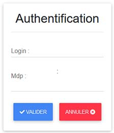
STATISTIQUE
Après avoir pu s’authentifier correctement, l’utilisateur arrive sur une page d’accueil qui contiendra les détails pour chaque DOSSIER(ou PORTEFEUILLE). C’est-à-dire le BILAN, TVA MENSUEL, TVA TRIMESTRIEL, CA12, ACOMPTE, LIQUIDATION IS, ALERT PES, ETAT RELEVE BQ (ou ETAT RELEVE BANCAIRE) ainsi que les CDM (Chef De Mission) concernés.
Un clic sur l’un des PORTEFEUILLES permet d’afficher la liste des CDM qui participent aux traitements de ce dernier ; à droite de l’écran.
Le menu déroulant sert à spécifier l’exercice (année) correspondant à la statistique voulue.
Après le chargement, on obtient la statistique détaillée pour chaque portefeuille.
Telle que:
BILAN
- Un clic dans la colonne TOTAL BILAN A FAIRE HORS MA ET MS, FAIT et RESTANT révèle les DETAILS de chaque nombre avec une option d’ EXPORTATION EXCEL.
TVA MENSUEL
TVA TRIMESTRIEL
CA 12
ACOMPTE IS
LIQUIDATION IS
ALERTE PES
- En cliquant sur ALERTE PES et en attendant environ 5 secondes, on obtient la statistique complète pour chaque dossier contenant le portefeuille.
- L’icône permet d’afficher les détails d’un dossier sur un Slide du côté droit de l’écran
ETAT BILAN BQ (BANCAIRE)
En cliquant sur ETAT BILAN BQ et en attendant environ 5 secondes, on obtient la statistique complète pour chaque dossier contenant le portefeuille.
Cliquer sur l’icône pour voir les détails de chaque dossier.
REMARQUES:
- Spécialement pour l’ ALERTE PES et ETAT BILAN BQ, il y a une Barre de recherche qui permet de trouver rapidement le dossier ciblé.
Afin de pouvoir afficher les statistiques correspondantes au dossier, il est essentiel de respecter l’ordre de manipulation suivante : choix EQUIPE(ou portefeuille) > EXERCICES (date). Si cet ordre n’est pas respecté, le message d’erreur vous invitera à refaire la manipulation (par exemple si vous n’avez pas choisi une équipe).
STATISTIQUE GENERALE
Afin de révéler la statistique générale (toute portefeuille ), rendez-vous dans le Menu > Stat General.
Une fenêtre affichant la statistique générale de Karlit apparaîtra avec les dates de clôture des exercices et tous les détails concernant le Bilan. On peut choisir l’année de l’exercice (1) a affiché dans le menu déroulant et aussi sélectionner une statistique de Total bilan à faire Hors MA et MS ou Total Bilan à faire Hors MA (2).
Enfin, on peut exporter le résultat en cliquant sur Export (3)
STATISTIQUE PAR SUPERVISEUR
Cliquer sur Menu > Stat par Sup pour se rendre dans la statistique par superviseur.
La première manipulation consiste à choisir le pays d’origine du superviseur sur le menu déroulant pays (1), après le nom du Superviseur (2) et enfin le choix de l’exercice (3). Le bouton Export (4) permet d’exporter le résultat en fichier Excel. La liste des portefeuilles du superviseur choisi s’affiche sur la droite de l’écran (5).
STATISTIQUE BILAN FAITS PAR CDM
En ce qui concerne les statistiques des bilans effectués par les CDM, il faut se rendre dans
Menu > Stat bilan par Cdm.
On peut choisir l’ exercice (1) sur le menu déroulant, et le mois correspondant (2). Les CDM Malagasy sont à gauche de l’écran, tandis que les CDM Français sont de l’autre côté de l’écran. L’option Export Excel (3) est toujours disponible. Les détails à propos de chaque bilan fait par le CDM sont révélés avec leur TOTAL.
STATISTIQUE : MA (Mise en Attente), ACTIF, TOTAL DOSSIER
Au sujet des clients mis en attente(MA), actif, MS et mis en sommeil il faut naviguer dans
Menu > Stat (MA – ACTIF – TOTAL DOSSIER)
On obtient ensuite le nombre total de dossiers pour chaque portefeuille, suivi des nombres de dossiers actifs, MA, MS, MISE EN SOMMEIL, CABINET, REV, CREA, BLOQUE PAR ANCIEN E-C et enfin XVIDE qui s’adressent à un cas exceptionnel (intrus), par exemple le cas d’un dossier sans clôture.
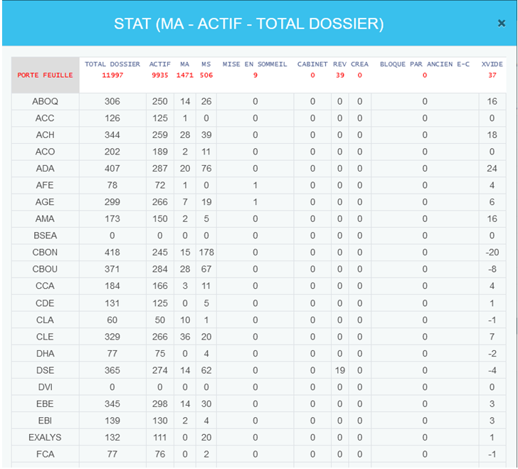
STATISTIQUE REGIME TVA
Toutes les informations concernant le TVA sont rassemblées dans cette statistique, notamment le RM, EM, RT, ET, CA12, EXO, FD, NON, NS suivi des Totaux. Pour se rendre dans cette statistique, il faut aller dans Menu > Stat Régime tva
Le statistique à afficher peut varier entre une statistique HORS MA ou Hors MA ET MS (1) en cliquant sur le bouton. Enfin, l’ Export Excel (2) est toujours disponible.
MENU POUR Mr TIANA ET Mr ALEX
- EXPORT DE BASE DE DONNEES
Afin de permettre l’exportation de la base de données, cliquer sur EXPORT BASE DE DONNEES.
On peut choisir le type de base de donnée a exporté,
- En choisissant l’année de l’exercice (1)
- En cochant ou en décochant MA (2)
- En cochant ou en décochant MS (3)
Enfin, en cliquant sur Valider.
Une fois que la base de données apparaît, l’option Sélectionnez Tout (4) sert à copier notre base de données qui peut être collée sur Excel
- STAT NB LIGNE ET CHIFFRE D’AFFAIRE
Afin d’accéder au nombre de ligne par équipe et aux chiffres d’affaire, il suffit de cliquer sur STAT NB LIGNE ET CHIFFRE D’AFFAIRE
Sélectionner l’équipe dans le menu déroulant votre équipe (1), puis sur choisissez votre exercice(s)(2) afin de sélectionner l’année correspondante. La statistique peut être affichée avec ou sans le MA et MS en cochant ou en décochant les checkbox (3) et (4). Enfin, le bouton Valider (5) permet d’afficher la statistique
Une fois affiché, on peut trier la statistique par ordre alphabétique ou par ordre croissant ou décroissant par l’intermédiaire des flèches (6). L’option Sélectionnez tout (7) est toujours disponible afin de la copier et de l’afficher dans EXCEL. Enfin on a une barre de recherche (8) pour interroger un mot clé
SUIVI
<, class="content">
A part l’affichage des statistiques, Suividoss est aussi conçu pour traiter et éditer les informations concernant les pièces comptables. Principalement les dossiers actifs, date de clôture des exercices et le bilan.
Pour se rendre dans l’interface de modification des informations, cliquer dans le champ où se trouvent l’icône et le nom de votre profil (1) puis sur Suivi (2).
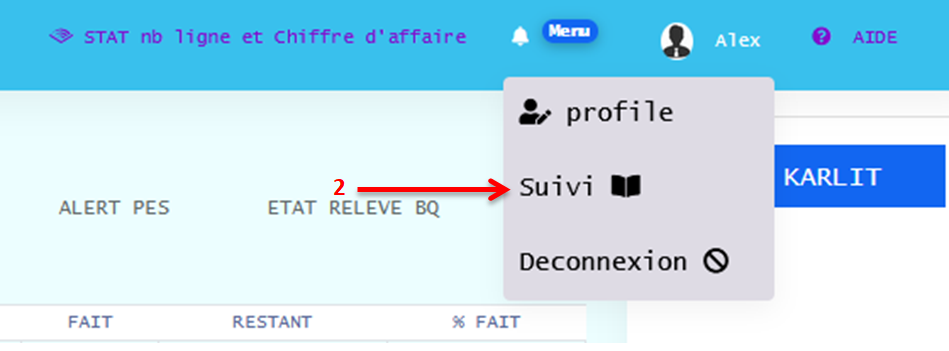
Ensuite, on a un champ votre équipe (3) pour choisir l’équipe à exposer, un champ pour choisir l’exercices (4). Et enfin un checkbox Dernier_exercice (5) pour permettre l’affichage du dernier exercice effectué par l’équipe.
La sélection multiple est faisable dans le choix d’équipe (1) et choix d’exercices (2).
- Affichage du dernier exercice
Choisissez l’équipe(1) et cochez sur Dernier_exercice(2) pour montrer le dernier exercice de l’équipe.
On obtient ensuite tous les détails concernant l’équipe choisie et les dossiers traités par ce dernier.
La visualisation des détails de chaque dossier s’effectue en double cliquant sur la ligne du dossier concerné ou en cliquant sur l’icône
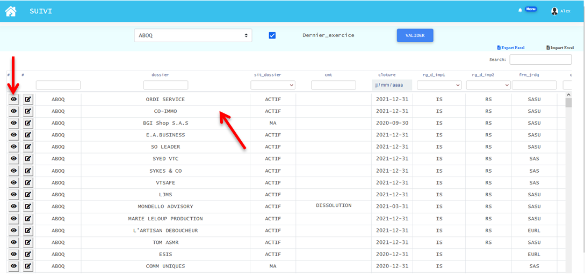
Les détails apparaissent sans possibilité de modification, juste une Visualisation.
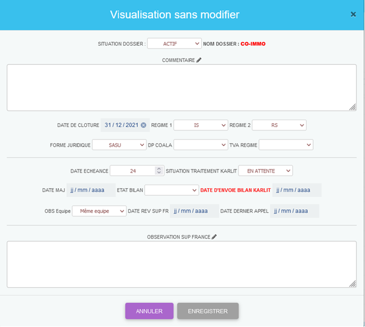
- Affichage de tous les dossiers complets d’une équipe
Choisissez votre équipe (1) et votre exercice (2) avec possibilité de choix multiple.
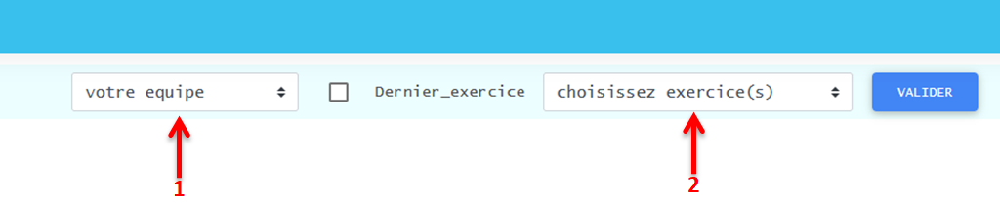
On peut modifier les informations de chaque dossier en double cliquant sur la ligne ou en cliquant sur l’icône (5).
Dans la colonne EQUIPE, dossier, cmt, frm_juridique, dt_etech, sit_karlit ,date_maj, dt_d_envoi_bl_krlt, cdm on peut effectuer des recherches distinguées dans la colonne concernée pour faire un triage sur les barres de recherche (3).
Parmi les colonnes sit_dossier, rg_d_imp1, rg_d_imp2, dp_coala, regime, etar_bl on a une barre de filtrages de mots clés (4).
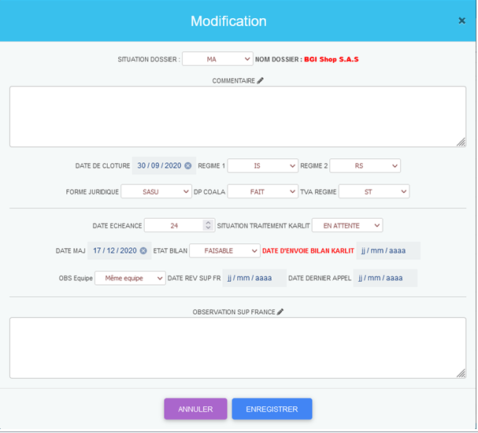
Pour ajouter plus d’informations à chaque dossier traité, cliquer sur l’icône (6) pour faire apparaître les options supplémentaires
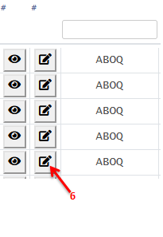
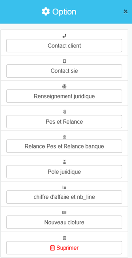
Ensuite la liste des options supplémentaires jaillis, telle que le Contact client, Contact sie, Renseignement juridique, Pes et Relance, Relance Pes et Relance banque, Pôle juridique, chiffre d’affaire et nb_line, Nouvelle clôture et Supprimer.
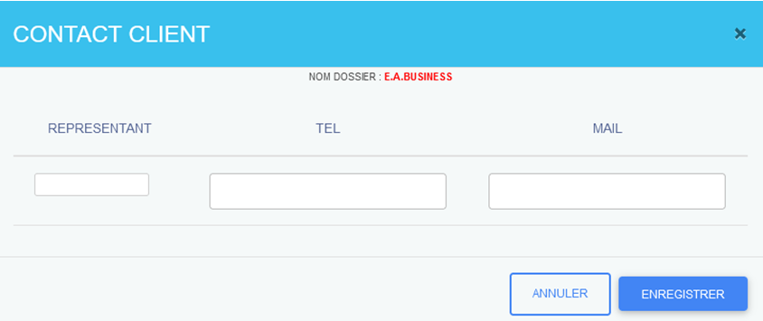
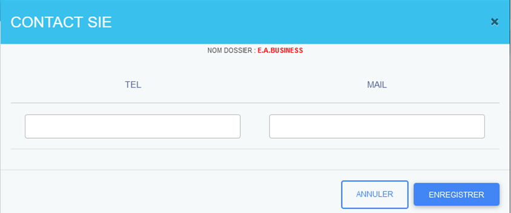
- Renseignements juridiques:
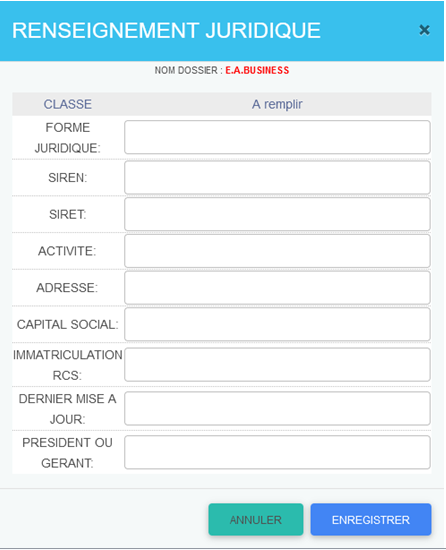
L’ajout d’un PES s’effectue en choisissant la date (1) puis en cliquant sur l’icône pour enregistrer (2). On a aussi le droit d’ajouter une date retour (3), mais l’enregistrement (4) n’est possible que si la date du retour est bien définie. La suppression (5) est aussi valable.
Même manipulation pour la RELANCE. Par contre, on peut modifier le nom (6) de la relance en cas d’exception.
- Relance Pièce et Relance Banque
L’ajout d’un Relance Pièce s’effectue en choisissant la date (1) puis en cliquant sur l’icône d’enregistrement pour enregistrer (2). On a aussi le droit d’ajouter une date retour (3), mais l’ enregistrement (4) n’est possible que si la date du retour est bien définie. La suppression (5) est aussi valable.
Même manipulation pour la RELANCE BANQUE. Par contre, on peut modifier le nom (6) de la relance en cas d’exception.
L’ajout de DATE DEMANDE RECUE France et DATE DEMANDE FAIT KARLIT se feront en cliquant sur la zone où il y a la date (1) et SITUATION (2) contenant un menu déroulant (3) pour ajouter une précision.
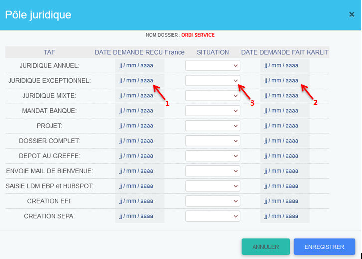
- Chiffre d’affaire et nb_line
L’insertion du chiffre d’affaire d’un dossier s’effectue en choisissant l’année (1)le nombre de ligne (2) et le chiffre d’affaire correspondant (3), et enfin en cliquant sur Enregistrer. On peut aussi supprimer (4) la ligne
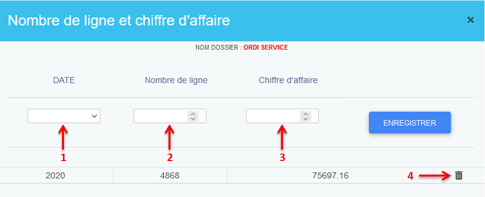
Cette option consiste à mettre en place une nouvelle date de clôture pour le dossier, ainsi la date n’est valide que si la date insérée est différente de la date déjà inscrite. Sinon, un message d’erreur vous informera que la date est déjà existante.
Enfin, un bouton Supprimer autorise l’utilisateur à faire une suppression définitive.
Une barre de recherche globale est placée en haut et à droite de l’écran afin de fouiller le mot clé dans l’intégralité de tous les documents
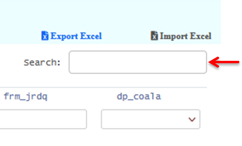
Le résultat présent peut être Exporté en fichier Excel (1) dans le but de le conserver facilement.
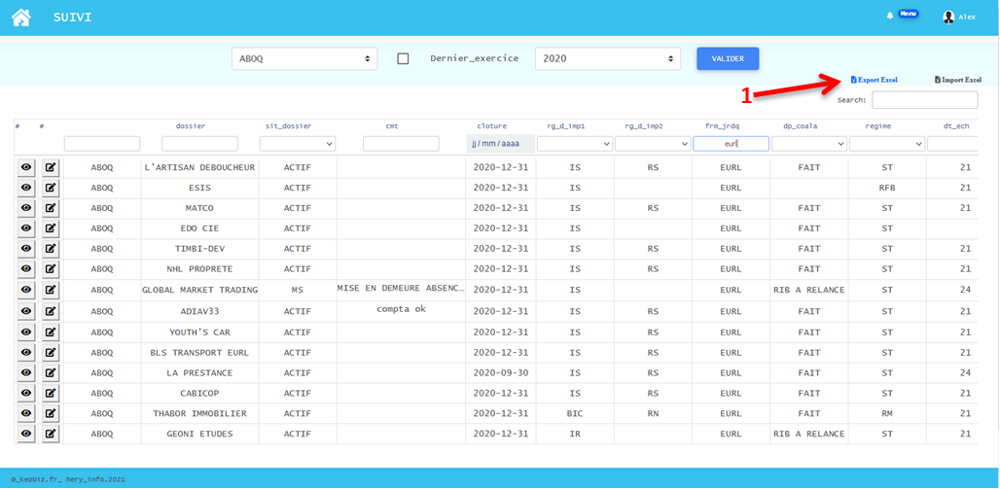
IMPORTATION ECXEL
L’importation d’un fichier Excel vers Suividoss est faisable en cliquant sur le bouton Import Excel (2).
REMARQUES:
Le fichier Excel a importé doit adopter une structure adéquate à la structure affichée dans suividoss, il doit être aussi complété de façon qu’il n’y ait pas de case vide. Afin de correspondre votre fichier Excel à celui de suividoss, il est important d’utiliser le modèle situé dans Import Excel (2) > Aide structure Excel à importer (3). Ce modèle peut être téléchargé et utilisé en tant que modèle, l’utilisateur devrait juste remplir le document pour pouvoir l’importer après.
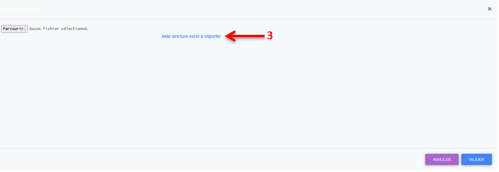
Le modèle ci-dessous peut être utilisé comme une « template ».
Une fois que les informations sont entrées correctement, l’importation se fera en naviguant dans
Import Excel (2) et en cliquant sur parcourir (4).
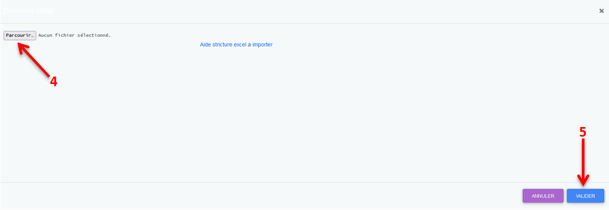